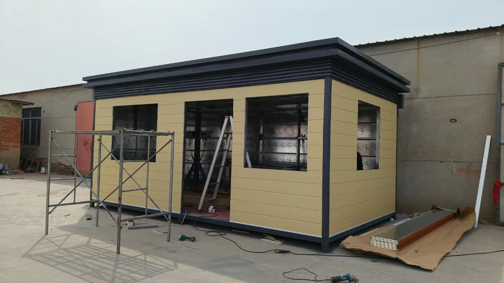
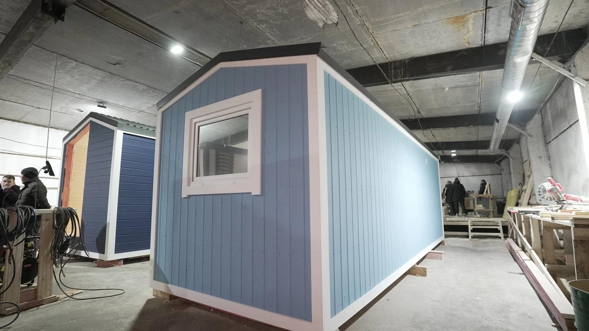
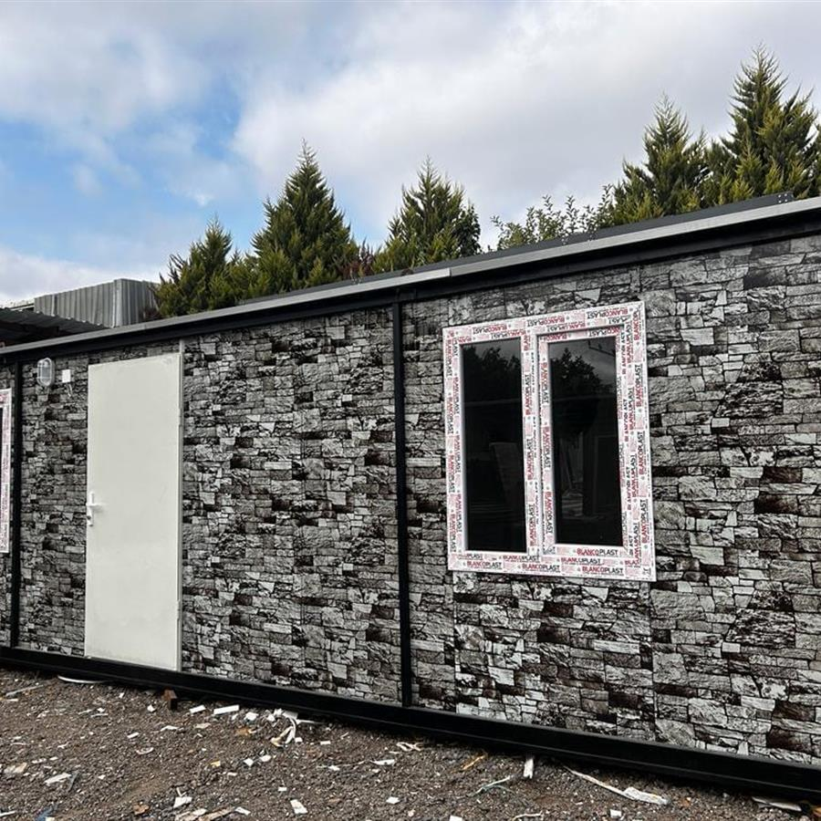

handling zone!Handling frame for deformation and edge-protection review.
Project Evidence / Modular House
Transported-module evidence for handling protection, reassembly inspection, corner trim, opening flashing, and thermal continuity.
Modular houses require evidence that panels remain installable after handling and that site reassembly does not compromise openings, corners, joints, or thermal continuity.
Lightweight exterior system logic supports modular transport and faster site assembly when handling and edge protection are controlled.
Risk PreventionPrevent deformation, corner impact, trim looseness, opening leakage, and thermal discontinuity at module joints.
Inspection PriorityCheck after transport, during reassembly, and after final closure.

handling zone!Handling frame for deformation and edge-protection review.

assembly check!Assembly evidence for module preparation before site delivery.
 trim closurev
trim closurevRepresentative corner and opening trim evidence for closure inspection.

panel layer^Panel layer evidence for continuity checks at module transitions.
Inspect panels after transport, verify edge protection, and confirm module substrate alignment.
Check corner trims, openings, interlocks, and fasteners during reassembly.
Record final corner, opening, joint, and thermal-transition conditions.
Primary risks are handling deformation, unsupported edge, opening leakage, corner impact, and thermal discontinuity.